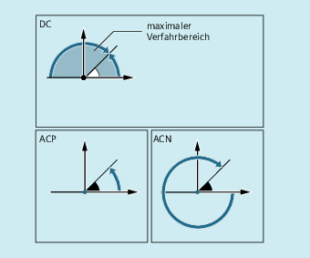
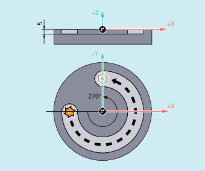

Für die Positionierung von Rundachsen im Absolutmaß stehen die satzweise wirksamen und von G90/G91 unabhängigen Befehle DC, ACP und ACN zur Verfügung.
DC, ACP und ACN unterscheiden sich in der zu Grunde liegenden Anfahrstrategie:

| Bezeichner der Rundachse, die verfahren werden soll (z. B. A, B oder C) | |
| Befehl zum direkten Anfahren der Position Die Rundachse fährt die programmierte Position auf direktem, kürzestem Weg an. Die Rundachse verfährt maximal in einem Bereich von 180°. | |
| Befehl zum Anfahren der Position in positiver Richtung Die Rundachse fährt die programmierte Position in positiver Achsdrehrichtung (Gegenuhrzeigersinn) an. | |
| Befehl zum Anfahren der Position in negativer Richtung Die Rundachse fährt die programmierte Position in negativer Achsdrehrichtung (Uhrzeigersinn) an. | |
| Anzufahrende Rundachsposition im Absolutmaß | |
Wertebereich: | 0 - 360 Grad | |
| Hinweis |
Die positive Drehrichtung (Uhrzeiger- oder Gegenuhrzeigersinn) wird im Maschinendatum eingestellt. |
| Hinweis |
Für die Positionierung mit Richtungsangabe (ACP, ACN) muss im Maschinendatum der Verfahrbereich zwischen 0° und 360° eingestellt sein (Modulo-Verhalten). Um Modulo-Rundachsen in einem Satz um mehr als 360° zu verfahren, ist G91 bzw. IC zu programmieren. |
| Hinweis |
Die Befehle DC, ACP und ACN können auch für die Spindelpositionierung (SPOS, SPOSA) aus dem Stillstand genutzt werden. Beispiel: SPOS=DC(45) |
Fräsbearbeitung auf einem Rundtisch
Das Werkzeug steht, der Tisch dreht sich auf 270° im Uhrzeigersinn. Dabei entsteht eine Kreisnut.
| Programmcode | Kommentar |
|---|---|
| N10 SPOS=0 | ; Spindel in Lageregelung. |
| N20 G90 G0 X-20 Y0 Z2 T1 | ; Absolutmaßangabe, im Eilgang Werkzeug T1 zustellen. |
| N30 G1 Z-5 F500 | ; Im Vorschub Werkzeug absenken. |
| N40 C=ACP(270) | ; Tisch dreht sich auf 270 Grad im Uhrzeigersinn (positiv), das Werkzeug fräst eine Kreisnut. |
| N50 G0 Z2 M30 | ; Abheben, Programmende. |
Siehe auch:
Absolutmaßangabe (G90, AC)